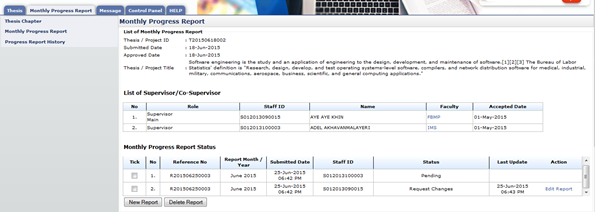
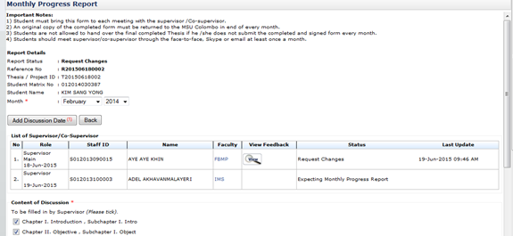
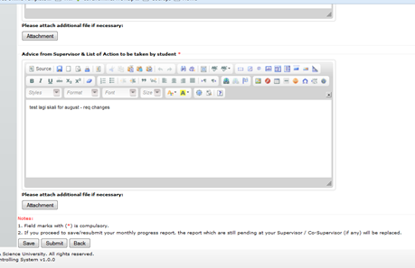

Figure 35: Edit Report
Pre-condition
- After supervisor review monthly progress report
Post-condition
- Change or repair report that has been reviewed
Steps:-
- Click on the Edit Report link on the far right side of the table shown in figure 58, under the Action column.

Figure 36: Edit Report
Steps:-
- Click on the to view feedback from supervisor.
- Then edit necessary detail for the monthly progress report, or repeat step in New Progress Report.
- After finish, click Submit button to submit. Click Save button to save as draft.

Figure 37: Edit Report
Created with the Personal Edition of HelpNDoc: Write eBooks for the Kindle